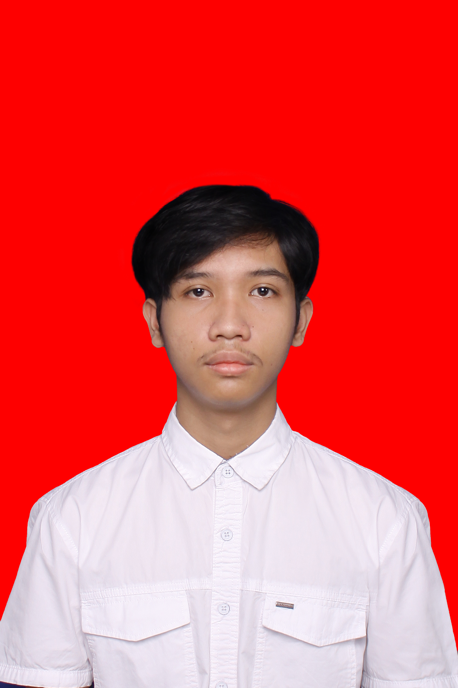

Profil

Seorang individu dengan semangat belajar tinggi dan berorientasi pada hasil, khususnya di bidang Sistem Informasi dan Teknologi. Memiliki keahlian dalam analisis data, manajemen informasi, serta pengembangan solusi berbasis teknologi. Berkomitmen untuk terus mengembangkan diri dan berkontribusi dalam kesuksesan perusahaan atau organisasi melalui penerapan kemampuan analitis dan inovasi teknologi.
Pendidikan
SMP Negeri 1 Depok (2018 – 2021)
SMA Negeri 9 Yogyakarta (2021 – 2024)
Telkom University Bandung, S1 Sistem Informasi (2024 – Sekarang)
Pengalaman Kerja
(Belum ada pengalaman kerja profesional)
Keterampilan
- Keahlian Teknis: C#, JavaScript, MySQL, HTML
- Bahasa: Bahasa Indonesia (Native), Bahasa Inggris